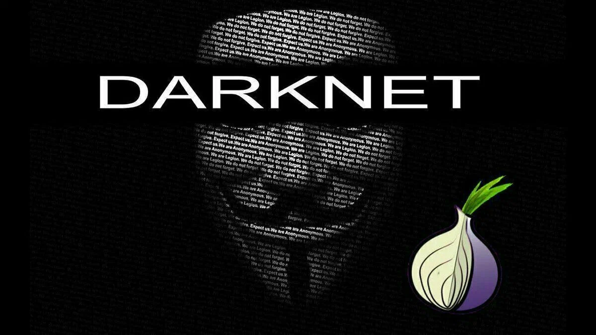
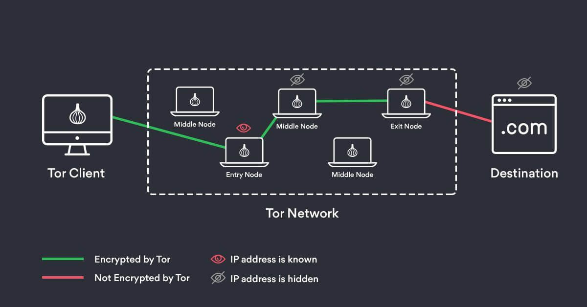
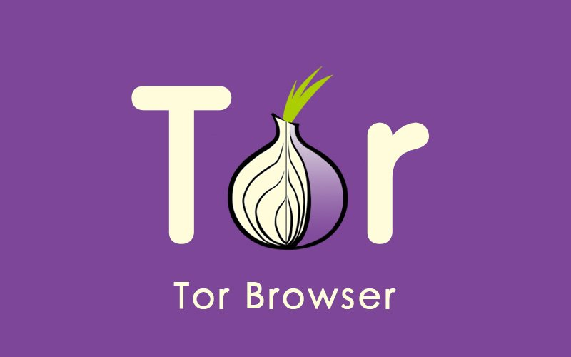
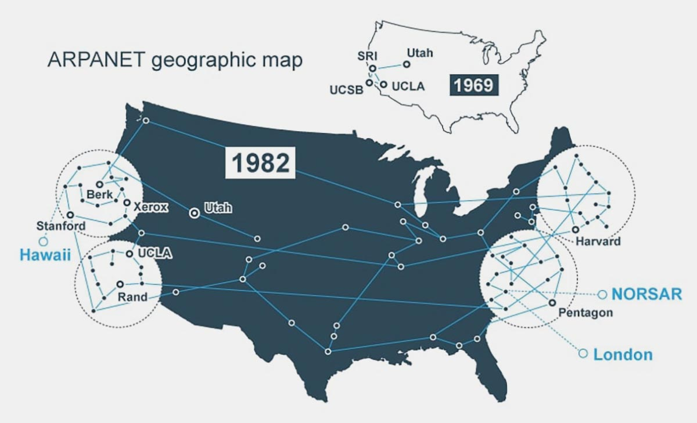

Даркнет.

-
На сайте Вы сможете узнать:
- Что такое «даркнет»?
- Как работает даркнет?
- Как попасть в даркнет?
- История даркнета.
Что такое даркнет?
Даркнет (англ. DarkNet — «темная сеть» или «теневая сеть») — это сегмент интернета, который скрыт из общего доступа. Из-за особенностей устройства в нем сохраняется анонимность и конфиденциальность каждого пользователя. Технически выяснить кто именно заходил на сайт практически невозможно, по этой причине им пользуются люди, желающие скрыть свою деятельность от чужих глаз. В даркнете помимо обычных сайтов из интернета имеются и скрытые сайты на которых за частую проводится не легальная деятельность. Для доступа к интернет страницам используются их стандартные адреса, а к даркнет сайтам используются случайные наборы символов или шифры с особым доменом «.onion», что переводится как «лук» и напрямую ссылается на технологию анонимного обмена информацией используемого в даркнет.
Как работает даркнет?
Каждый присоединившийся к сети даркнет принимает соглашение о том, что его компьютер становится ретранслятором для других пользователей «темной сети». Получение доступа к какому-либо сайту осуществляется многократным подключением к компьютерам других пользователей, называемых луковыми маршрутизаторами, и на каждом шаге происходит шифровка, таким образом получается многослойная структура, в которой промежуточные сетевые узлы (компьютеры пользователей даркнет) не знают источника, пункта назначения и содержания сообщения. А если каждый слой представить, как тонкую пленку то по итогу получится луковица от куда и происходит название.
Перед отправкой запроса маршрутизатор выбирает случайное число промежуточных маршрутизаторов и генерирует сообщение для каждого, шифруя их симметричным ключом и указывая для каждого маршрутизатора, какой маршрутизатор будет следующим на пути.  Для получения симметричного ключа («ключа сессии») с каждым из промежуточных маршрутизаторов производится начальное установление связи с использованием открытого ключа этого маршрутизатора, через маршрутизаторы, предшествующие ему в цепочке. В результате сообщения, передаваемые по цепочке, имеют «слоистую» структуру, в которой необходимо расшифровать внешние слои, чтобы получить доступ к внутреннему слою.
Каждый маршрутизатор, получающий сообщение, «сдирает» слой с лука -расшифровывает своим ключом сессии содержимое сообщения: предназначенные ему инструкции по пути и зашифрованное сообщение для маршрутизаторов, расположенных дальше по цепочке. В конечном сетевом узле снимает последний слой шифрования и отправляет сообщение адресату. Установленная цепочка остается доступной для двусторонней передачи данных в течение некоторого периода времени.
Получатель запроса может отправить ответ по той же цепочке без ущерба для анонимности каждой из сторон. При этом слои шифрования, наоборот, «наращиваются» на каждом маршрутизаторе, пока ответ не достигнет отправителя запроса. Отправитель владеет всеми ключами сессии, используемыми в цепочке, и поэтому сможет расшифровать все слои: от внешнего, зашифрованного ближайшим к отправителю маршрутизатором в цепочке, до внутреннего, зашифрованного маршрутизатором, ближайшим к получателю запроса.
Благодаря данной системе пользователь сохраняет собственную анонимность и может попасть на любой сайт.
Как попасть в даркнет?
 Для получения доступа в даркнет требуется специальное программное обеспечение, наиболее распространенным является браузер Tor, его название расшифровывается как «The onion router». Это система прокси-серверов, позволяющая устанавливать анонимное сетевое соединение, защищённое от прослушивания. Рассматривается как анонимная сеть виртуальных туннелей, предоставляющая передачу данных в зашифрованном виде. Написана преимущественно на C++.
История даркнета.
История даркнета берет свое начало с 70-х годов прошлого века. Именно тогда, когда разрабатывался прообраз современного интернета - сеть ARPANet.  Уже в то время военное ведомство решило разработать сеть «для своих». Практически до начала нового века об этой закрытой сети было известно лишь ограниченному количеству людей. Первые сведения о ней появились в интернете, когда стало известно об изобретении системы The Onion Router (TOR), которая позволяла за счет множества прокси-серверов установить соединение, которое будет защищено от прослушивания и слежения.